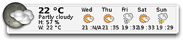
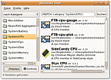

gDesklets
Dieser Artikel wurde für die folgenden Ubuntu-Versionen getestet:
Ubuntu 14.04 Trusty Tahr
Zum Verständnis dieses Artikels sind folgende Seiten hilfreich:
gDesklets sind kleine Erweiterungen für den Desktop (GNOME, Xfce u.a.). Neben einfachem "Eye Candy" gibt es die üblichen Verdächtigen: Notizzettel, Uhren, Kalender, Systemmonitore et cetera. gDesklets ist nicht das einzige Programm seiner Art, einen Überblick liefert der Artikel Desklets.
Installation¶
 Folgende Pakete sind zu installieren [1]:
gdesklets (universe)
 mit apturl
mit apturl
Paketliste zum Kopieren:
sudo apt-get install gdesklets
sudo aptitude install gdesklets
Benutzung¶
 Nach der Installation ist das Programm bei Ubuntu-Varianten mit einem Anwendungsmenü unter "Zubehör -> gDesklets" zu finden.
Nach dem Start öffnet sich die "gDesklets Shell". In dieser Shell können Desklets ausgewählt, wobei die Desklets nach Kategorien sortiert sind, und neue installiert werden. Alle installierten Desklets werden durch einen Doppelklick auf die gewünschte Erweiterung aktiviert. Wird ein Rechtsklick ( ) auf das jeweilige Desklet ausgeführt, öffnet sich ein Dialogfenster mit weiteren Einstellungen.
) auf das jeweilige Desklet ausgeführt, öffnet sich ein Dialogfenster mit weiteren Einstellungen.
Hinweis:
Die enthaltenen Wetterdesklets sind seit 2006 nicht mehr aktualisiert worden und defekt. Eine Alternative war bisher das externe Desklet Good Weather Mod-Small  , das aber nicht mehr funktioniert, seit Weather.com die kostenlose Bereitstellung von Wetterdaten Ende Oktober 2011 eingestellt hat. Der Artikel Wetteranzeige zeigt Alternativen.
, das aber nicht mehr funktioniert, seit Weather.com die kostenlose Bereitstellung von Wetterdaten Ende Oktober 2011 eingestellt hat. Der Artikel Wetteranzeige zeigt Alternativen.
Weitere Desklets lassen sich über Gnome-look.org als Archiv herunter laden. Diese kann man einfach via "Ziehen und Fallen lassen" ("Drag'n'Drop") auf die Shell legen, um sie zu installieren. Alternativ kann der Weg über "Datei -> Paket installieren" benutzt werden. Die eigenen Desklets werden im versteckten Verzeichnis ~/.gdesklets/ gespeichert.
Damit gDesklets automatisch startet, muss es dem Autostart [2] hinzufügt werden. Dazu kopiert man die Datei usr/share/applications/gdesklets.desktop nach ~/.config/autostart/gdesklets.desktop und passt die Exec=-Zeile an [4]:
Exec=gdesklets
Bei der nächsten Anmeldung wird nun automatisch das zuletzt benutzte Profil geladen.
Einstellungen¶
gdesklets bietet ein paar globale Einstellungen. Diese erreicht man entweder per Rechtsklick auf das Symbol in der Leiste (Panel) oder durch folgenden Befehl in einem Terminal-Fenster [3]:
gdesklets configure
Bevorzugter Texteditor¶
Man kann den bevorzugten Texteditor einstellen, mit welchem man zum Beispiel den Quellcode der Desklets betrachten kann.
X-Composite Support¶
Mit dieser Option kann man Transparenz für die Desklets einschalten. Dazu muss man allerdings einen Composite-Manager installiert haben. Alternativ kann man allerdings bei vielen Desklets für den Hintergrund auch ein Bild auswählen. Wählt man hier zum Beispiel ein 1x1 Pixel großes transparentes Bild, erreicht man auch ohne 3D-Desktop Transparenz.
Bildschirmauflösung¶
Falls Desklets nicht richtig dargestellt werden, kann man hier die verwendete Auflösung angeben.
Benachrichtigungssysmbol anzeigen¶
Schaltet das Symbol in der Leiste (Panel) an/aus.
Mitteilungen beim Laden eines Desklets¶
Gibt eine kleine (Debug-)Meldung aus, wenn die Desklets initialisiert werden.
Tastenkombination zum Schwebemodus umschalten¶
Ein sehr nützliches Feature. Schwebemodus bedeutet, dass die Desklets in den Vordergrund kommen, also über allen Fenstern dargestellt werden. Die aktuell verwendete Tastenkombination wird beim ersten Start des Programms ausgegeben. Falls diese Strg + S ist, sollte man sie ändern, da diese Tastenkombination in vielen Editoren und Textverarbeitungen zum Speichern verwendet wird.
Problembehebung¶
Desklets nicht minimieren¶
GNOME 2¶
Normalerweise werden alle Fenster (inkl. der Desklets) mit der Funktion "Desktop anzeigen" im GNOME Panel minimiert. Um dieses Verhalten zu ändern, das Programm gconf-editor in einem Terminal-Fenster [3] öffnen:
gconf-editor
und den Zweig:
/apps/compiz/general/allscreens/options/hide_skip_taskbar_windows
öffnen. Dann den Haken bei dieser Optionen entfernen. Evtl. abmelden und wieder anmelden oder einen Neustart durchführen, falls die Einstellung nicht sofort aktiv ist. Beim Einsatz von Compiz kann auch dieser Hinweis Anwendung finden.
 - Artikel LinuxUser 05/2005
- Artikel LinuxUser 05/2005- Erstellt mit Inyoka
-
 2004 – 2017 ubuntuusers.de • Einige Rechte vorbehalten
2004 – 2017 ubuntuusers.de • Einige Rechte vorbehalten
Lizenz • Kontakt • Datenschutz • Impressum • Serverstatus -
Serverhousing gespendet von